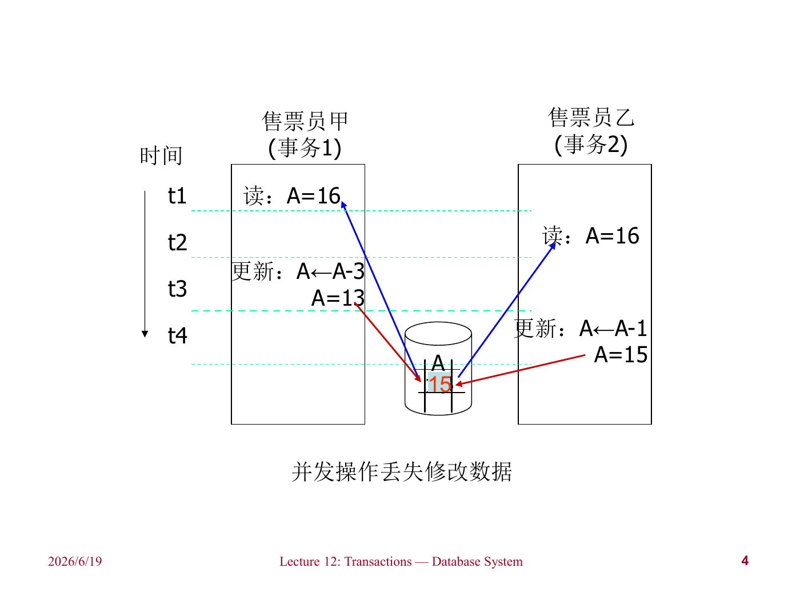
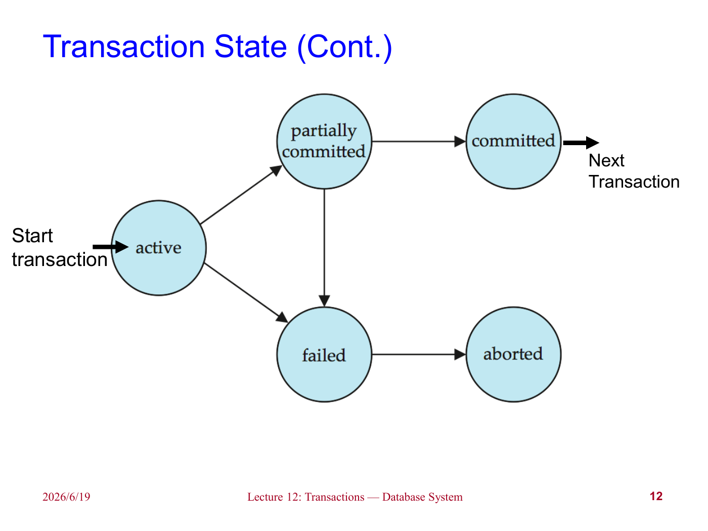
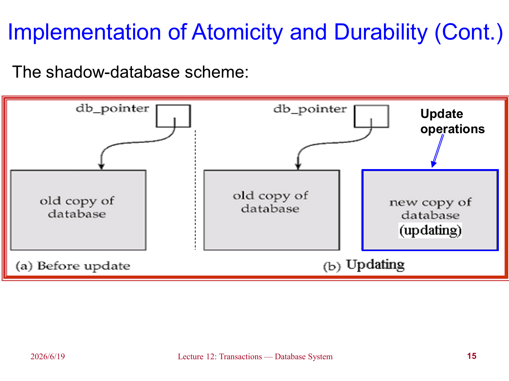
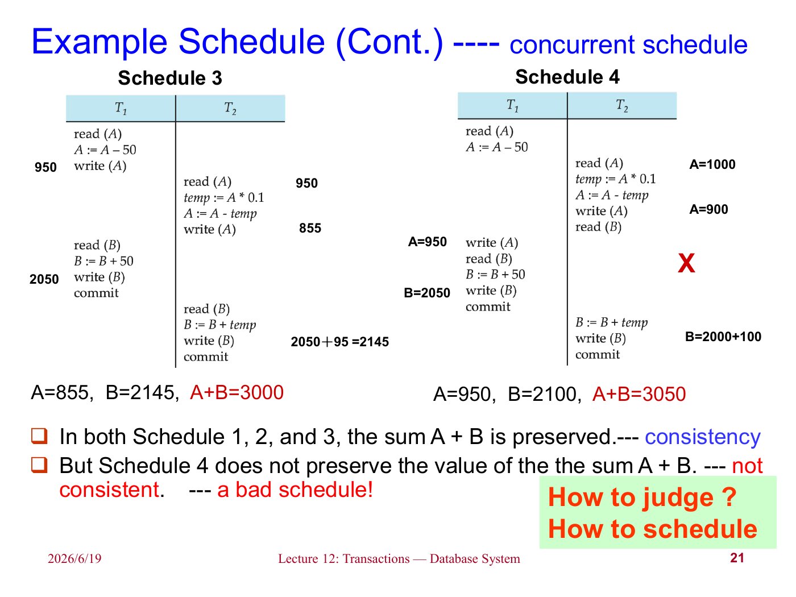
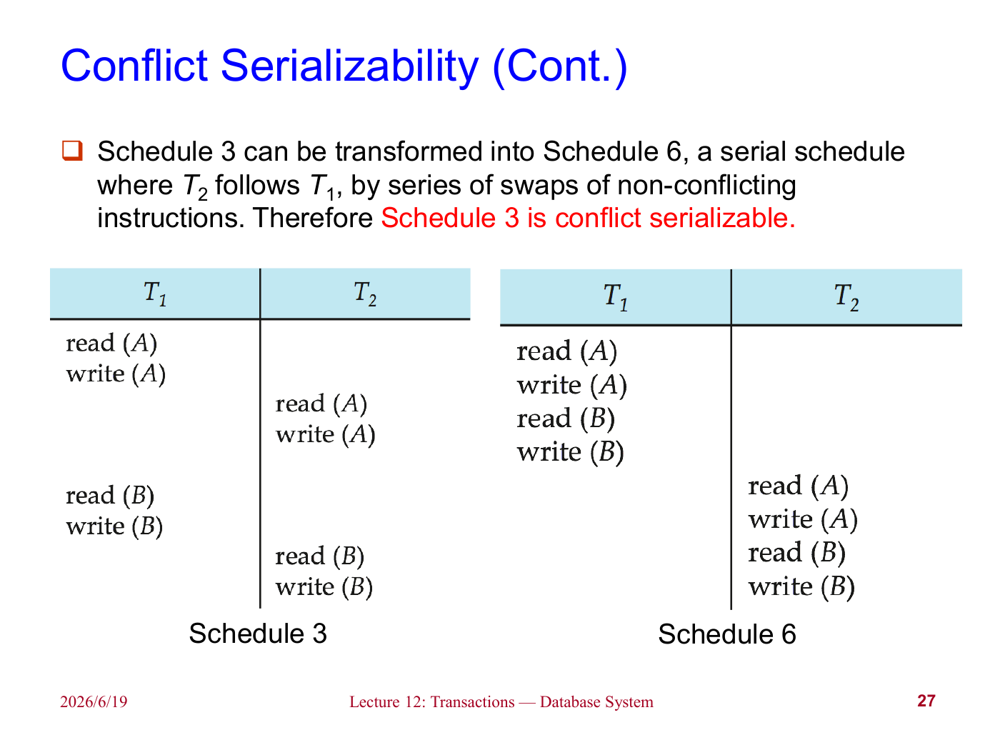
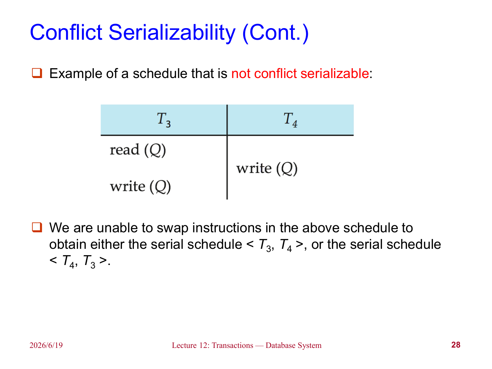
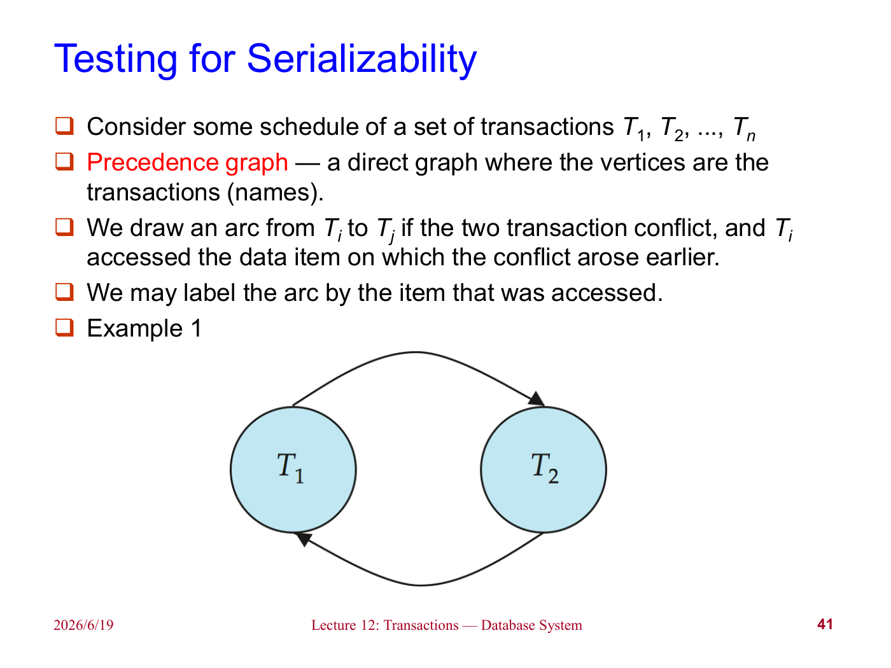

lec11 Transactions
前面几章中，我们讨论了 SQL 如何执行、如何优化。但是数据库系统真正运行时，不会只有一个用户、一个查询、一个完美无故障的环境。现实中会有多个事务同时执行，也会有系统崩溃、硬件故障、程序错误等情况。
事务（Transaction）就是为了解决这些问题而提出的抽象。它把一组数据库操作包装成一个逻辑单位，使得系统可以讨论：这些操作要么全做要么全不做；并发执行时不能互相看见不该看见的中间状态；一旦提交，就算系统崩溃，结果也不能丢。
Transaction Concept¶
对数据库系统来说，事务主要应对两个问题：
- 多个用户或程序并发执行；
- 各种故障，比如系统崩溃、硬件错误、软件错误。
如果没有事务，简单的并发操作就可能破坏数据。比如售票系统中，两个售票员同时读取剩余票数 A=16，一个卖出 3 张，一个卖出 1 张。如果二者都基于旧值更新，最后可能只保留了其中一次修改。
Lost Update

这类问题的本质是：每个程序单独看也许都是正确的，但并发交错后，整体结果不再正确。
事务可以理解为一段程序执行过程，它会访问并可能更新多个数据项。一个事务通常由多条 SQL 语句组成，并以提交（commit）或回滚（rollback）结束。
Note
事务执行过程中，数据库可以暂时处于不一致状态；但是事务提交后，数据库必须重新回到一致状态。比如转账过程中，先从 A 扣钱再给 B 加钱，中间短暂时刻总金额减少了，但提交后总金额必须恢复正确。
ACID Properties¶
为了保证事务的可靠性，数据库系统需要满足 ACID 四个性质。
Atomicity：原子性。事务中的操作要么全部反映到数据库中，要么全部不反映。不能只执行一半。
Consistency：一致性。若事务开始前数据库是一致的，并且事务逻辑本身正确，那么事务结束后数据库仍应是一致的。
Isolation：隔离性。多个事务并发执行时，每个事务看起来都像是在某个串行顺序中独立执行。一个事务不应该看到另一个事务尚未提交的中间结果。
Durability：持久性。事务一旦成功提交，它对数据库造成的修改就必须持久保存，即使之后发生系统故障也不能丢失。
考虑从账户 A 向账户 B 转账 50：
- 原子性要求：如果扣了 A 的钱后系统崩溃，不能只留下 A 减少而 B 没增加的结果；
- 一致性要求：转账前后 A 和 B 的总金额不变；
- 隔离性要求：其它事务不能在扣 A 之后、加 B 之前读到错误总额；
- 持久性要求：用户看到转账成功后，即使系统崩溃，结果也不能消失。
Warning
一致性并不只由数据库系统保证。数据库可以维护主键、外键、检查约束等显式约束，但“转账金额必须守恒”这类业务逻辑也需要事务程序本身写对。如果事务逻辑错误，ACID 不能自动把错误业务变正确。
Transaction State¶
一个事务在执行过程中会经历若干状态：
- Active：初始状态，事务正在执行；
- Partially committed：最后一条语句已经执行完，但结果可能还在内存缓冲区中；
- Failed：发现事务无法继续正常执行；
- Aborted：事务已经回滚，数据库恢复到事务开始前的状态；
- Committed：事务成功完成。
Transaction State

事务进入 aborted 状态后，一般有两种选择：
- 重新启动事务：适用于不是事务内部逻辑错误导致的失败，比如死锁回滚后重试；
- 杀死事务：适用于事务本身存在逻辑错误，再运行也没有意义。
Implementation of Atomicity and Durability¶
原子性和持久性通常由恢复管理器（Recovery Manager）来实现。课件先介绍了一个非常简单但低效的方案：影子数据库（Shadow Database）。
该方案维护一个指针 db_pointer，它总是指向当前一致的数据库副本。事务更新时，不直接修改旧副本，而是在新副本上修改：
- 如果事务回滚，直接删除新副本；
- 如果事务提交，先把新副本所有页面写入磁盘，再原子地切换
db_pointer指向新副本，之后删除旧副本。
Shadow Database

这个方案的优点是概念清晰：提交之前旧数据库不变，提交时只需要切换指针。但是它有几个明显限制：
- 必须保证
db_pointer的更新是原子的； - 不支持并发事务；
- 假设磁盘本身不会失败；
- 每个事务都要复制整个数据库，对大型数据库非常低效。
Note
影子拷贝的思想在文本编辑器等场景中很常见：先写临时文件，成功后再替换原文件。但数据库规模大、并发多，所以实际系统通常使用日志、检查点、回滚段等更复杂的恢复机制。
Concurrent Executions¶
允许事务并发执行有明显好处：
- 提高处理器和磁盘利用率：一个事务等待磁盘 I/O 时，另一个事务可以使用 CPU；
- 降低平均响应时间：短事务不必一直排在长事务后面；
- 提高吞吐量（throughput）。
但并发也会带来问题：即使每个事务单独执行都正确，交错执行后仍可能破坏一致性。数据库系统需要用并发控制（Concurrency Control）来实现隔离性。
Schedules¶
调度（Schedule）描述多个事务的指令按时间交错执行的顺序。一个合法调度必须满足：
- 包含每个事务中的所有操作；
- 保持每个事务内部操作的原有顺序。
如果事务一个接一个执行，这样的调度称为串行调度（Serial Schedule）。串行调度一定保持一致性，但并发度很低。
并发调度则允许不同事务的操作交错执行。它可能是正确的，也可能不是。我们需要一个标准来判断：某个并发调度是否“等价于”某个串行调度。
Concurrent Schedule

Serializability¶
可串行化（Serializability）的基本假设是：每个事务单独执行都能保持数据库一致性。因此，只要一个并发调度等价于某个串行调度，它也应该是正确的。
按照“等价”的定义不同，可串行化主要有两种：
- 冲突可串行化（Conflict Serializability）；
- 视图可串行化（View Serializability）。
为了简化讨论，我们通常只看 read(Q) 和 write(Q) 操作。事务在读写之间做的本地计算暂时忽略。
Conflicting Instructions¶
设 \(l_i\) 是事务 \(T_i\) 的一条指令，\(l_j\) 是事务 \(T_j\) 的一条指令，且 \(i\ne j\)。如果二者访问同一个数据项 \(Q\)，并且至少有一个是写操作，那么它们冲突。
具体来说：
| 操作对 | 是否冲突 |
|---|---|
read(Q) 和 read(Q) |
不冲突 |
read(Q) 和 write(Q) |
冲突 |
write(Q) 和 read(Q) |
冲突 |
write(Q) 和 write(Q) |
冲突 |
不冲突的相邻操作可以交换顺序，不影响最终结果；冲突操作不能随意交换，因为它们的顺序会影响读到的值或最终写入的值。
Conflict Serializability¶
如果一个调度 \(S\) 可以通过反复交换相邻的非冲突操作，变成调度 \(S'\)，则称 \(S\) 和 \(S'\) 冲突等价（Conflict Equivalent）。
如果 \(S\) 冲突等价于某个串行调度，则称 \(S\) 是冲突可串行化的。
Conflict Serializability

有些调度无法通过交换非冲突操作变成任何串行调度，那么它就不是冲突可串行化的。
Not Conflict Serializable

View Serializability¶
视图等价（View Equivalence）比冲突等价更宽松。两个调度 \(S\) 和 \(S'\) 视图等价，需要对每个数据项 \(Q\) 满足三点：
- 如果某事务在 \(S\) 中读到 \(Q\) 的初始值，那么它在 \(S'\) 中也必须读到初始值；
- 如果某事务在 \(S\) 中读到的是另一个事务写出的 \(Q\)，那么在 \(S'\) 中也必须读到同一个事务写出的值；
- 在 \(S\) 中最后写 \(Q\) 的事务，在 \(S'\) 中也必须最后写 \(Q\)。
如果一个调度视图等价于某个串行调度，则它是视图可串行化的。
所有冲突可串行化调度都是视图可串行化的，但反过来不一定成立。那些视图可串行化但不是冲突可串行化的调度，通常包含盲写（Blind Write），也就是事务不先读某数据项就直接写它。
Note
视图可串行化更一般，但检测代价很高。课件后面提到，判断视图可串行化是 NP-complete 问题。因此实际系统更常用冲突可串行化相关的协议和判断。
Recoverability¶
可串行化讨论的是并发调度是否保持一致性。但事务还可能失败，所以还要讨论调度是否可恢复。
Recoverable Schedules¶
如果事务 \(T_j\) 读了事务 \(T_i\) 写过的数据，那么 \(T_i\) 必须先于 \(T_j\) 提交。满足这个条件的调度称为可恢复调度（Recoverable Schedule）。
为什么需要这个条件？如果 \(T_j\) 读了 \(T_i\) 的未提交结果，并且 \(T_j\) 先提交了，之后 \(T_i\) 又回滚，那么 \(T_j\) 已经把依赖错误数据的结果永久化了，系统就很难恢复。
Cascading Rollbacks¶
级联回滚（Cascading Rollback）指的是：一个事务失败后，所有读过它未提交数据的事务也必须回滚，接着又可能影响更多事务。
这虽然能保持正确性，但会撤销大量已经做过的工作。
Cascadeless Schedules¶
无级联调度（Cascadeless Schedule）要求：如果 \(T_j\) 要读 \(T_i\) 写过的数据，那么 \(T_i\) 必须在这个读操作之前已经提交。
也就是说，不允许事务读取未提交数据。这样就不会发生级联回滚。
Tip
关系可以这样理解：无级联调度一定是可恢复调度，但可恢复调度不一定无级联。实际系统通常更希望产生无级联调度，因为恢复成本更低。
Implementation of Isolation¶
最简单的隔离实现方式是一次只执行一个事务，这一定产生串行调度，但并发度太差。
实际系统需要在并发度和控制开销之间做权衡。理想情况下，系统产生的调度应该：
- 是冲突可串行化或视图可串行化的；
- 是可恢复的；
- 最好是无级联的。
不同并发控制协议允许的调度集合不同。有的协议只产生冲突可串行化调度，有的协议可能允许更宽泛的视图可串行化调度。具体协议，如两阶段封锁、时间戳、多版本并发控制，会在后续章节讨论。
Transaction Definition in SQL¶
SQL 中事务通常是隐式开始的。事务结束方式主要有：
commit work 表示提交当前事务，并开始一个新事务；rollback work 表示中止当前事务并回滚。
很多数据库系统默认开启自动提交（auto commit）：每条 SQL 语句成功执行后都会自动提交。如果希望多条语句组成一个事务，需要关闭自动提交。比如 JDBC 中可以使用：
Warning
自动提交适合简单单语句操作，但不适合转账、下单、扣库存这类需要多步共同成功的业务。否则每一步都单独提交，一旦中间失败，就很难保证原子性。
Testing for Serializability¶
判断一个调度是否冲突可串行化，可以使用优先图（Precedence Graph），也叫序列化图。
构造方法如下：
- 图中的每个顶点表示一个事务；
- 如果事务 \(T_i\) 和 \(T_j\) 的某两个操作冲突，并且 \(T_i\) 的冲突操作先发生，就画一条边 \(T_i\to T_j\)；
- 可以在边上标注造成冲突的数据项。
Precedence Graph

判断规则：
一个调度是冲突可串行化的，当且仅当它的优先图无环。
如果优先图无环，可以对图做拓扑排序，得到一个等价的串行顺序。如果有环，则说明存在一组事务相互要求“必须先于对方”，无法变成串行调度。
Note
优先图测试主要用于理解正确性。实际并发控制协议通常不会一边执行一边构造完整优先图再检测环，而是通过封锁、时间戳等规则直接避免产生不可串行化调度。
Weak Levels of Consistency¶
并不是所有应用都必须要求最强的可串行化隔离。有些只读统计任务可以接受近似结果，比如查询优化器收集的统计信息，或者某些报表里的近似总额。为了性能，SQL 标准定义了不同隔离级别。
常见隔离级别包括：
- Serializable：可串行化，最强隔离级别；
- Repeatable Read：可重复读，只读已提交记录，并且同一事务中重复读取同一记录应返回相同值；
- Read Committed：读已提交，只能读已经提交的数据，但同一记录两次读取可能不同；
- Read Uncommitted：读未提交，甚至可以读到其它事务尚未提交的数据。
Warning
一些数据库默认隔离级别并不是 Serializable。比如很多系统默认使用 Read Committed 或快照隔离（Snapshot Isolation）。写应用时不能只凭“用了事务”就默认有最强隔离，需要明确检查数据库默认配置。
Summary¶
这一章讨论的是事务的基本概念，以及怎样判断并发执行是否仍然正确。
可以总结为：
- 事务是数据库操作的逻辑执行单位；
- ACID 分别对应原子性、一致性、隔离性和持久性；
- 事务有 active、partially committed、failed、aborted、committed 等状态；
- 影子数据库能解释原子性和持久性的基本思想，但不适合大型并发数据库；
- 调度描述多个事务操作的交错顺序；
- 可串行化要求并发调度等价于某个串行调度；
- 冲突可串行化可以通过交换非冲突操作来理解；
- 可恢复性要求读到别人写入结果的事务不能先于写入者提交；
- 无级联调度避免读取未提交数据，从而避免级联回滚；
- 优先图无环当且仅当调度冲突可串行化。
这一章的核心
事务机制的目标不是让并发消失，而是让并发看起来像某种安全的串行执行。可串行化解决“并发结果是否正确”，可恢复性解决“失败后能否收拾干净”，二者合在一起才构成可靠事务处理的基础。